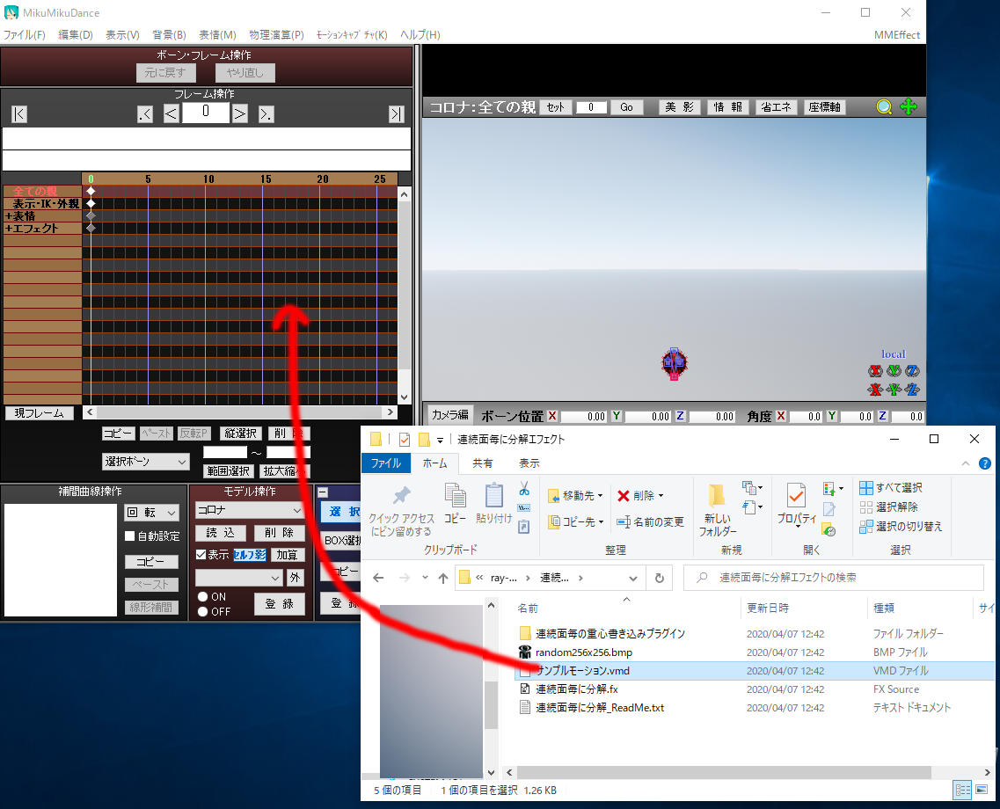

sdPostFractureSmokeはIoriKotatsu様によるscale.fx対応ray-mmd(ray-mmdの原作者はRui様、scale.fxの原作者は針金P様)が対応している「連続面毎に分解エフェクト」(原作者はわたり様)に対して煙と光を付けるエフェクトです。
誰がどうやって作って配ってるモノなのかから既に混乱しそうですが、とりあえずステップバイステップで使えるようになるための手引を記しておきます。ray-mmdを挫折したという方もどうぞ！
とりあえず、以下ができない事には始まりませんので、ここまでは各自出来るようになっているという前提で進めていきます。
手順を頭から箇条書きにするとこんな感じになります
大変に感じますが1,2,3は一回やればもうやらなくていいですし、ray-mmdを普段から使っている方にとっては増えてる手順は5,7,8だけですから、意外に簡単です。それでは順に参りましょう。
scale.fx対応ray-mmdのリンクをクリックして、BowlRollからIoriKomatsu氏の配布していらっしゃるアーカイブをダウンロードし、好きなフォルダに解凍しましょう。
以下、"C:\MMD\ray-mmd-scale-rev4"に解凍したとして話を進めていきますので、パス名は各自読み替えてください。以下の画像のようなフォルダ構成になります。
このプラグインは、scale.fx対応ray-mmdに同梱されており、"C:\MMD\ray-mmd-scale-rev4\連続面毎に分解エフェクト\連続面毎の重心書き込みプラグイン"フォルダに入っています。
もう今ではほとんどの方が64bit版Windowsを使っていると思いますから64bit版OSを使っていることを前提に進めますが、連続面重心書き込みver2x64.dllをPMXEDitorの_plugin\Userフォルダにコピーします。
Windows10ではインターネットからダウンロードしてきたDLLは勝手に読み込めないようにされていますから、連続面重心書き込みver2x64.dllを右クリック→プロパティで「全般」タブの下にある「セキュリティ」の欄、「許可する」チェックをオンにしてください。この辺りはPMXEditorを使える方ならハマらないとは思いますが。
readme.txtにも書いてありますが解凍してそのままの位置では多分sdPostFractureSmokeはエラーを出して動きません。C:\MMD\ray-mmd-scale-rev4\ray-mmd\Extension以下にフォルダを掘って入れましょう。こんな感じで。
※なんでこんなことになっているのかというと、ray-mmd\shader\fracture.fxsubをsdPostFractureSmoke全体から参照しているためです。
これは建物でも人物の服でも好きなものを選んでください！今回は首振りP様の配布されているコロナウイルスを例に説明を進めます。 ともかく、配布されている作者様による規約はよく読んで使用範囲は守ってね！
分解したいモデルに重心情報を書き込みます、とても簡単です。PMXEditorに分解したいモデルを読み込んだら、「編集」－「プラグイン」－「User」－「連続面重心書き込み」を選択します。モデルの面数によっては結構時間がかかるかもしれませんのでお待ちください。
書き込みが終わったら、コロナ_分解可能.pmxなどと適当に名前を変えて保存しましょう。 保存先フォルダは元々モデルのあったフォルダにしましょうね(テクスチャなどのデータは.pmxファイルに入っていないため、別フォルダに保存するとテクスチャが無くなります)
次に、MMDを起動して、ray-mmdを使える状態にします。ray-mmdを使ったことが無い方向けの内容も含まれていますが、ちょっとモデルの読み込みで普段と違う点もあるので読んでみてください。
1.MMDを起動し、分解可能モデルを読み込む
2.C:\MMD\ray-mmd-scale-rev4\ray-mmd\ray.xと、ray-controller.pmxを読み込む
3.C:\MMD\ray-mmd-scale-rev4\ray-mmd\Skybox\Time of day\Time of day.pmxを読み込み、MMDの「背景－モデル描画順」メニューで"Time of day"をモデルより上に持っていく
4.MMEffectメニューの「エフェクト割り当て」ダイアログを出し、Mainタブの分解したいモデルを選択。"C:\MMD\ray-mmd-scale-rev4\ray-mmd\Main\main_fracture.fx"を指定。 ray-mmdを普段使っている方への注意ですが、分解したいモデルに対して、このようにエフェクトファイル割り当ての各タブについて、デフォルトでセットされる.fxファイルではなく、_fracture付きのfxファイルを指定します。
5.「エフェクト割り当て」ダイアログのFogMapタブでTime of day.pmxに"C:\MMD\ray-mmd-scale-rev4\ray-mmd\Skybox\Time of day\Time of fog with godray with cloud caster.fx"を指定 ※とにかく表示できればOK、軽くしたい！という場合はTime of fog.fxでもOKです。
6.「エフェクト割り当て」ダイアログのEnvLightMapタブでTime of day.pmxに"C:\MMD\ray-mmd-scale-rev4\ray-mmd\Skybox\Time of day\Time of lighting.fx"を指定
7.「エフェクト割り当て」ダイアログのMaterialMapタブでTime of day.pmxに"C:\MMD\ray-mmd-scale-rev4\ray-mmd\Materials\material_skybox.fx"を指定
8.「エフェクト割り当て」ダイアログのMaterialMapタブで分解したいモデルに"C:\MMD\ray-mmd-scale-rev4\ray-mmd\Materials\material_2.0_fracture.fx"を指定
9.「エフェクト割り当て」ダイアログのSSAOタブで分解したいモデルに"C:\MMD\ray-mmd-scale-rev4\ray-mmd\Shadow\SSAO visibility 1.0_fracture.fx"を指定
10.「エフェクト割り当て」ダイアログのPSSM1～4タブにそれぞれ分解したいモデルに"C:\MMD\ray-mmd-scale-rev4\ray-mmd\Shadow\PSSM1～4_fracture.fx"を指定
モデル操作パネルから分解したいモデルを選択したら、"D:\apl\MikuMikuDance\MME\ray-mmd-scale-rev4\連続面毎に分解エフェクト\サンプルモーション.vmd"というファイルがあるので、 フレーム操作パネルにドロップしましょう

すぐ再生してもモーションが無いのであっという間に終わってしまいますから、再生パネルで終了フレームを適当に長くして(下の例では2000に指定しました)「再生」ボタンを押します。
かなり速く飛んで行ってしまうと思いますから、モデルの「エフェクト」－「衝撃速度」ボーンや「重力ベクトル」ボーンの数字をいじって調整した方がよいと思います。 モデルのサイズにもよりますが、コロナウイルスの場合、「衝撃速度」ボーンのX座標を0.05程度、「重力ベクトル」ボーンのY座標を-0.001程度にセットするとよいでしょう。 ついでに、「崩壊速度」ボーンも0.05程度にして、全体がボコっと崩壊するよりも、1か所から崩壊が始まっている感じを出してみましょうか。 ともかく、今回は煙を鑑賞したいのである程度ゆっくりした動きになったほうが見ごたえがあるはずです。
※速度の単位は[MMD距離/フレーム]、重力の単位は[MMD距離/フレーム^2]になっています。1MMD距離(ミクメートル)は約8cmと言われていますから、現実の重力に近い感じにしたい場合は重力ベクトルは(0,-0.136,0)程度にするとよいでしょう。
やっと最後まで来ました、あとは、さきほどC:\MMD\ray-mmd-scale-rev4\ray-mmd\Extension\sdPostFratcureSmoke以下に入れた、sdPostFractureSmoke.xと、sdPostFractureSmokeController.pmxをドロップするだけです。
さて、うまく煙と光が付きましたか？うまく行ったらそぼろ様 作のAutoLuminousを入れたり、他のポストエフェクトと組み合わせたり、パラメータをいろいろいじって遊んでみてください！
お疲れさまでした！